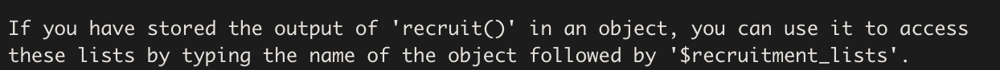
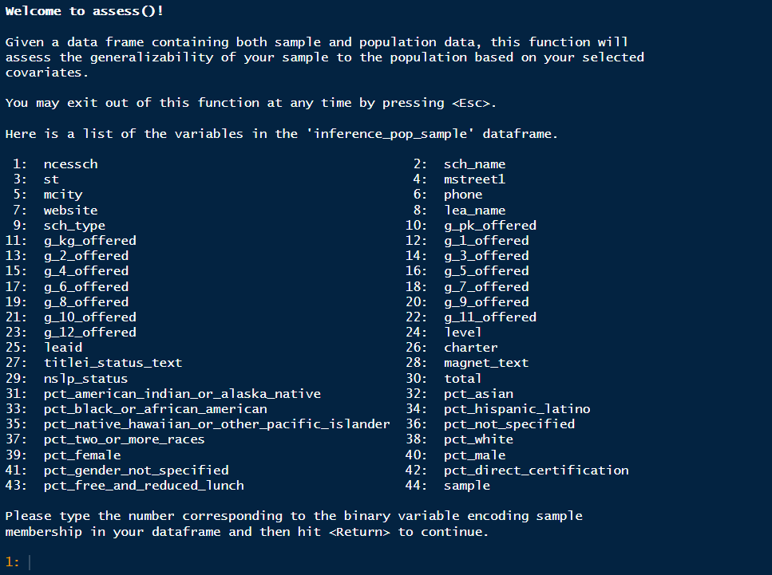

Introduction
Welcome to the generalizeR! This package is designed to guide education researchers through:
- Using important features of their inference population to stratify units
- Developing a recruitment plan for a future evaluation
- Assessing the generalizability of a completed evaluation
Note that it is possible to use the package at either end of the sampling process: you can start at the beginning and use the package to obtain a stratified sample, or you can start at the end with your previously obtained sample data and assess its generalizability.
Step 1: Stratify
Guided
The stratify() function defaults to ‘guided’ mode,
meaning that it prints text throughout and prompts the user to enter
information with a question-and-answer format. This is intentional, in
part to mimic the nature of http://thegeneralizer.org/ and in part because we intend
for this R package to be as accessible as possible for people with
limited R experience.
Users who are running stratify() multiple times, who are
familiar with R, or who simply dislike the guided feature can turn it
off by using the argument ‘guided = FALSE’. If they do so, however, they
must be sure to specify values for all the other function arguments, as
those would otherwise be obtained from user input later.
This tutorial will follow a hypothetical example.
Filtering the Inference Population
Suppose we are a team of education researchers who want to test the effect of an intervention on SAT scores. We have somewhat limited resources, so we plan on using a sample size of 40 schools. We want to estimate the average effect of our intervention in Texas charter high schools. Thus, our inference population consists of all Texas charter high schools. Previous literature suggests that gender, minority status, and social class might affect gaps in achievement, so we select a few stratifying variables – percentage female, percentage black, and percentage free and reduced lunch. We also think school size might result in treatment differences, so we include the total school size as well.
Since we are working with high schools, we can use the Common Core
database provided in this package. For information on each of the
columns and the source of the data, run ?cc.
cc## # A tibble: 98,563 × 43
## ncessch sch_name st mstreet1 mcity phone website lea_name sch_type
## <dbl> <chr> <chr> <chr> <chr> <chr> <chr> <chr> <int>
## 1 10000500870 Ala Avenue … AL 600 E A… Albe… (256… http:/… Albertv… 1
## 2 10000500871 Albertville… AL 402 E M… Albe… (256… http:/… Albertv… 1
## 3 10000500879 Evans Elem … AL 901 W M… Albe… (256… http:/… Albertv… 1
## 4 10000500889 Albertville… AL 1100 Ho… Albe… (256… http:/… Albertv… 1
## 5 10000501616 Big Spring … AL 257 Cou… Albe… (256… http:/… Albertv… 1
## 6 10000502150 Albertville… AL 1100 Ho… Albe… (256… http:/… Albertv… 1
## 7 10000600193 Kate Duncan… AL 6077 Ma… Grant (256… http:/… Marshal… 1
## 8 10000600872 Asbury Sch AL 1990 As… Albe… (256… http:/… Marshal… 1
## 9 10000600876 Claysville … AL 140 Cla… Gunt… (256… http:/… Marshal… 1
## 10 10000600877 Douglas Ele… AL P O Box… Doug… (256… http:/… Marshal… 1
## # ℹ 98,553 more rows
## # ℹ 34 more variables: g_pk_offered <chr>, g_kg_offered <chr>,
## # g_1_offered <chr>, g_2_offered <chr>, g_3_offered <chr>, g_4_offered <chr>,
## # g_5_offered <chr>, g_6_offered <chr>, g_7_offered <chr>, g_8_offered <chr>,
## # g_9_offered <chr>, g_10_offered <chr>, g_11_offered <chr>,
## # g_12_offered <chr>, level <chr>, leaid <int>, charter <dbl>,
## # titlei_status_text <chr>, magnet_text <chr>, nslp_status <chr>, …By looking at the st column, we can already see a
problem here. The data frame contains schools from all states in the US,
but we are interested in a much narrower inference population.
Therefore, there is some filtering we must do first.
To identify Texas schools, we can select those rows with
st equal to TX:
inference_pop <- cc %>%
filter(st == "TX")To filter out the non-charter schools, we can use the variable in our
data frame called charter that takes on the value of 0 for
non-charter schools and 1 for charter schools. Finally, to select high
schools (which almost always include grades 9 to 12), we can use one of
the grade indicator variables, say g_10_offered. After
combining all of these filters, we get:
inference_pop <- cc %>%
filter(st == "TX") %>%
filter(charter == 1) %>%
filter(g_10_offered == "Yes")
inference_pop## # A tibble: 330 × 43
## ncessch sch_name st mstreet1 mcity phone website lea_name sch_type
## <dbl> <chr> <chr> <chr> <chr> <chr> <chr> <chr> <int>
## 1 480000407173 POR VIDA A… TX 1135 MI… SAN … (210… "http:… POR VID… 4
## 2 480000409116 CORPUS CHR… TX 1135 MI… SAN … (361… "http:… POR VID… 4
## 3 480000409460 CESAR E CH… TX 3701 MU… CORP… (361… "http:… POR VID… 4
## 4 480001407174 GEORGE GER… TX 6944 SU… SAN … (210… "" GEORGE … 4
## 5 480001607239 DALLAS CAN… TX 4621 RO… DALL… (214… "http:… TEXANS … 4
## 6 480001607847 DALLAS CAN… TX 325 W 1… DALL… (214… "http:… TEXANS … 4
## 7 480001607910 HOUSTON CA… TX 325 W 1… DALL… (214… "http:… TEXANS … 4
## 8 480001608434 SAN ANTONI… TX 325 W 1… DALL… (210… "http:… TEXANS … 4
## 9 480001608908 FORT WORTH… TX 6220 WE… FORT… (817… "http:… TEXANS … 4
## 10 480001609028 FORT WORTH… TX 325 W 1… DALL… (817… "http:… TEXANS … 4
## # ℹ 320 more rows
## # ℹ 34 more variables: g_pk_offered <chr>, g_kg_offered <chr>,
## # g_1_offered <chr>, g_2_offered <chr>, g_3_offered <chr>, g_4_offered <chr>,
## # g_5_offered <chr>, g_6_offered <chr>, g_7_offered <chr>, g_8_offered <chr>,
## # g_9_offered <chr>, g_10_offered <chr>, g_11_offered <chr>,
## # g_12_offered <chr>, level <chr>, leaid <int>, charter <dbl>,
## # titlei_status_text <chr>, magnet_text <chr>, nslp_status <chr>, …The size of our inference population has dropped from over 98,000 schools to about 350 schools. It now only includes Texas charter high schools (or schools that offer 10th grade).
Running the Function
We are now ready to run stratify() on our inference
population. We enter:
strat_output <- stratify(data = inference_pop)We are greeted with the following:

Selecting the ID Variable
The above prompt requires us to enter the name of the ID variable we
wish to use. We enter the name of the column that contains the unique
NCES school IDs in the CCD database – ncessch.

We then receive a message informing us that stratify()
has converted all the character variables in our data frame to factor
variables. This means some factor variables will have a large number of
levels if their original character versions had many distinct
observations. We are also told a table displaying an overview of the
variables in our data frame has been printed in the Viewer pane. A
preview of that same table is shown below. In general, whenever a table
is printed to the console, there will be one printed in the Viewer pane
as well.
| Variable | Type | Levels |
|---|---|---|
| sch_name | factor | 329 |
| st | factor | 1 |
| mstreet1 | factor | 244 |
| mcity | factor | 84 |
| phone | factor | 307 |
| Note: | ||
| Only the first 5 rows of the table are shown in this tutorial. |
Selecting the Stratification Variables
Next we receive a prompt asking us to select our stratification
variables and a menu showing us all the variables available in our
dataset. We are also given a warning that we must select at least two
variables and we can’t choose any factor variables containing more than
4 levels. These restrictions are put in place to prevent errors and
ensure the stratification process goes smoothly. If we wish to use a
factor variable with more than 4 levels for stratification, we must
first exit stratify() and re-code our desired factor levels
from that variable as indicator variables within our data frame (the
package fastDummies may be of use).
When choosing covariates, we must ensure that we do not use columns
that contain only one value. In this case, we cannot use
charter as a covariate, as all the schools in our current
dataset are charter schools and every value of charter is
1. Also we must ensure that we do not use columns that are linearly
dependent. An example of this is if the sum of two columns is a column
itself. stratify() will give an error if either of these
cases happens.

For our stratifying variables of interest, we have chosen
pct_female, pct_black_or_african_american,
pct_free_and_reduced_lunch, and total. We
enter: 29 32 38 42. The function prints out a list of these
variables with their names highlighted in blue, as well as a table
displaying each variable’s type and number of levels. This is done so we
can look them over, confirm what we selected, and make sure the
variables are the types we expected. Since these results seem
reasonable, we indicate that they are correct by entering
1.
Missing Observations
We are now shown a table (also available in the Viewer pane) that
breaks down how many missing observations each variable contains,
including our id variable ncessch. These observations will
be dropped from the inference population before the stratification is
performed.

Descriptive Statistics
Next, the function prints out the descriptive statistics of the stratification variables chosen, both categorical and continuous. In this case, all the variables are continuous. Plots of the variables – histograms or bar charts, as appropriate – are generated and displayed one at a time.


Choosing the Number of Strata
Now we are ready to choose the number of strata in which to divide
our population. stratify() prints some information, similar
to that presented by the Generalizer Web application,
explaining what the choice represents and giving us some guidance. While
choosing more strata is generally better in terms of generalizability,
the practical demand placed on the sampling process increases with the
number of strata, because units must be sampled from each stratum.
Since we are only planning on using a sample size of 40 schools, we’ll try a smaller number – 4 strata:

The process of stratifying can take some time. If the function were to run silently, users might fear that R had frozen and quit. As a sort of progress bar, we have turned on “verbose” mode for the clustering process, which prints out the within-cluster sum of squares at each iteration until the stratifying process converges:

Understanding the Results
Stratification Review
The results begin with a brief review of the stratification process. We are informed of the stratification variables, the observations dropped due to missing data, the population size (after missing observations have been dropped), the number of strata, and the proportion of variation in the population explained by the strata. In this case, that proportion was about 66%. Increasing the number of strata would increase the percentage explained and result in more homogeneous strata but would also require more resources during study implementation.
Covariate Statistics
stratify() then provides us with a table of the
within-stratum means and standard deviations for each of the stratifying
variables, as well as a count of the total number of units in each
stratum.

A similar table is printed in the Viewer pane:
| Variable | Mean | Standard Deviation | Mean | Standard Deviation | Mean | Standard Deviation | Mean | Standard Deviation | Mean | Standard Deviation |
|---|---|---|---|---|---|---|---|---|---|---|
| total | 333.804 | 466.237 | 433.925 | 316.029 | 434.218 | 451.636 | 362.300 | 1074.626 | 413.157 | 489.103 |
| pct_black_or_african_american | 0.316 | 0.141 | 0.076 | 0.081 | 0.116 | 0.114 | 0.525 | 0.279 | 0.163 | 0.191 |
| pct_female | 0.480 | 0.164 | 0.522 | 0.052 | 0.533 | 0.098 | 0.324 | 0.299 | 0.501 | 0.138 |
| pct_free_and_reduced_lunch | 0.857 | 0.106 | 0.789 | 0.133 | 0.293 | 0.154 | 0.805 | 0.276 | 0.667 | 0.275 |
Heat Map
The function also prints a heat map:
Each column of the heat map corresponds to a stratum. We can read the map by going down the columns, assessing each stratum in relation to the population. Remember that the goal is to sample independently within each stratum in order to obtain a sample that is representative of the population as a whole. To that end, each stratum has been made as homogeneous as possible within itself (i.e. the within-stratum variances have been minimized) while also maintaining as much heterogeneity as possible across strata (i.e. the between-stratum variance has been maximized).
Looking at the first column, we see that Stratum 2 contains 161 Texas charter high schools. These schools are:
- close to the population mean in number of students (about 430),
- above the population mean in the percentage of students on free or reduced lunch (80%),
- close to the population mean in percentage of female students (50%),
- and below the population mean in percentage of black students (10%).
The other columns may be interpreted in exactly the same manner.
(Users may wonder why the shade of red for the bottom left and bottom right cells differs when both seem to have a mean of 10%. This is because of the scale of the variable, the size of the population mean, and rounding.)
After reading the results, we have the opportunity to try out different numbers of strata, as seen in the prompt below.

If we wish to try different strata, we enter 1, as seen in the image,
then enter the number of strata we wish to try. All of the same
statistics will be printed again for the different number of strata. We
may try as many different strata as we like. Only the last strata will
be saved in the strat_output object. In this case, I will
stick with four strata.
Summary and Print
If we wish to look at the results of stratify() again,
we can run the following code:
summary(strat_output)Note that strat_output is the name we have assigned to
our stratify_object in this example; users should replace
it with their own name they have chosen.
There is also an option to print our stratify_object.
Doing so yields:

We have finished the stratifying process!
Unguided
We highly suggest that you only use the unguided version after you
have used the guided version multiple times and feel that you have a
clear understanding of what the function does. If you want to use the
guided version, but are uncertain about what each argument is supposed
to be, please run ?stratify in the console, or check the
reference page for the function.
Step 2: Recruit
Guided
Now that we have separated our inference population into 4 strata,
our next goal is to sample units from each stratum in such a way that
the overall sample will be representative of the entire population. We
can accomplish this task using the recruit() function.
Like stratify(), recruit() is guided by
default; we can simply set guided = FALSE to turn this
option off if we choose, but we must specify values for the other
function arguments instead.
Since we assigned the results of stratify() to an
object, that object can then be passed directly into
recruit(), like so:
rec_output <- recruit(strat_output)We are immediately greeted with the following welcome message:

After pressing the return key, we see:
Our desired sample size is 40 schools, so we enter ‘40’ for the number of units we wish to recruit. The function then generates a recruitment list for each stratum. Each row in a stratum’s recruitment list corresponds to a different unit in the stratum, and the units have been ranked in ascending order of their Mahalanobis distances from the mean vector of the stratifying variables. The idea is that the units with the smallest Mahalanobis distances are most likely to be “representative” of the population and so should be chosen first to be part of the sample.

Next, the function prints a recruitment table that tells us how many units we should recruit from each stratum. It arrives at these numbers by multiplying the sampling proportion (which is equal to the ratio of the stratum size to the total population size) for each stratum by the desired sample size, in this case 40.
Here is what the recruitment table looks like in the Viewer pane.

This means that our recruitment plan should be to recruit 20 schools from Stratum 1, 4 from Stratum 2, 5 from Stratum 3, and 11 from Stratum 4.
If a strata is very small (e.g. has only one or two units), then it
is possible for recruit to choose zero units from that
strata. If this happens, then your chosen strata are likely not ideal,
and you should go through the stratification process again.
The function then asks us if we want to save the recruitment lists as csv files.

Upon entering ‘1’ to indicate ‘Yes’, the lists are automatically
saved to your working directory. This also happens in the unguided
function if we set save_as_csv = TRUE.

Lastly, the function reminds us that the recruitment lists can also
be accessed from its output, provided that it has been stored in an
object. You can also see the table showing the strata and the number of
units recruited any time by running print(rec_output).
We have finished the recruitment process!
Unguided
We highly suggest that you only use the unguided version after you
have used the guided version multiple times and feel that you have a
clear understanding of what the function does. If you want to use the
guided version, but are uncertain about what each argument is supposed
to be, please run ?recruit in the console or check the
reference page for recruit.
Step 3: Assess
Guided
The assess() function reports generalizability for your
sample. A generalizability index (between 0 and 1) is a global measure
of similarity between the sample and population for a defined set of
covariates. You can multiply by 100 to get a percentage value: for
instance, a generalizability index of 0.8 means the sample is 80%
similar to the population on the selected covariates. We highly suggest
running assess() before beginning any
research studies so that you can be confident you have a representative
sample.
Here are some rules of thumb for interpreting the generalizability index:
Very High: 1.00 ≥ B ≥ 0.90;
High: 0.90 > B ≥ 0.80;
Medium: 0.80 > B ≥ 0.50;
Low: B < 0.50.
From Tipton (2014):
Here “very high” generalizability means that the experimental sample is “like” a random sample from the population of interest. When the sample is not like the population, however, reweighting can be used to estimate a useful result when the sample has “high” generalizability. This means that the reweighted estimate of PATE is likely to be close to conditionally unbiased (assuming that the ignorability condition has been met) and that the sample is sufficiently similar to the population that this reweighting will result in only a small increase in standard errors. In contrast, when a sample is considered to have “medium” generalizability, while reweighting is possible, as a result of coverage errors or overlap problems, the reweighted estimator will contain bias and/or the inflation to the standard errors could be large. This means that results may not be quite as useful. Finally, for those with “low” generalizability, the sample and population are considered sufficiently different that no amount of reweighting will produce a useful estimate of the average treatment effect for the population. In some cases, this is because the amount of bias that can be removed is very small, and/or (though typically both) the resulting standard errors will be so large as to deem the reweighted estimate “useless.”
Tipton, E. (2014). How Generalizable Is Your Experiment? An Index for Comparing Experimental Samples and Populations. Journal of Educational and Behavioral Statistics, 39(6), 521–546. https://doi.org/10.3102/1076998614558486
Before using assess(), you first must pick a final
sample based on the results from recruit(). After choosing
your sample, you are ready to take the results you obtained from
stratify() and recruit() and use them to
assess() the generalizability of your sample data to the
population. Unlike the previous two functions, you cannot take the
output of recruit and plug it directly into assess().
Instead, assess() requires the inference population dataset
given to stratify() at the beginning of this process, with
an additional variable indicating whether each unit is in the
sample.
If you did not use the stratify() and
recruit() functions to pick your sample, then you will need
to give assess() a dataset of the population that you chose
your sample from, which must include your covariates and a sample
indicator variable.
Returning to our example, recall that our inference population
consists of Texas charter high schools. Therefore, assess()
will provide a generalizability index that shows to what extent the
results from the the chosen sample will generalize to all Texas charter
high schools. If you would like to see how the sample may generalize to
data beyond this inference population (e.g. charter schools across the
US), then you may include these additional observations in the
population dataset you give assess() - just be sure that
these added units are marked as not in the sample.
We can use the recruitment lists stored in rec_output
and the number of units per strata to add a sample variable
to inference_pop. The list for strata n can be
found by running rec_output$recruitment_lists[[n]]. You
will likely add this sample variable manually over time as
you coordinate with each school, but since this is an example, we will
pretend that recruitment was entirely successful.
sample_list <- c(rec_output$recruitment_lists[[1]]$ncessch[1:5],
rec_output$recruitment_lists[[2]]$ncessch[1:20],
rec_output$recruitment_lists[[3]]$ncessch[1:11],
rec_output$recruitment_lists[[4]]$ncessch[1:4])
inference_pop_sample <- inference_pop %>%
mutate(sample = if_else(ncessch %in% sample_list,
1,
0))Now we are ready to give the data to the guided assess()
function.
assess_output <- assess(inference_pop_sample)First, we will receive this welcome message and be prompted to indicate the binary variable that encodes sample membership.

We will enter 44 to indicate sample. We see the same
list of variables, except with sample missing, and we are
asked to select covariations. We must specify the variables that we hope
are generalizable. These are the same variables we first used to
stratify the population. In this case, we will enter 30 33 39 43, the
same variables we used for stratifying (these are different numbers from
stratify because stratify() removes the id variable
ncessch).

After entering this information, you will be asked two questions: first, if the sample data is disjoint from the population, and second, if the population data should be trimmed.
For this first question, the data is not disjoint only if the sample is not a direct subset of the population. For example, this sample would be disjoint with the population if the sample only included schools in Texas, but the target population includes schools in New Hampshire. Also, every unit in the sample must have come from the population. If that is untrue for even one unit, then the data is disjoint. In our example, the sample is an exact subset of the population, and is not disjoint from the population.
The second question relates to how well your chosen sample represents
the population. Since the nature of research studies makes it impossible
to do a simple random sample (SRS), you will invariably find that the
units in the population have unequal probabilities of being in the
sample. Sometimes there are units in the population with zero
probability of being in the sample. This results in coverage error
(Tipton, 2014), where the sample only represents a portion of the
population. As a default, you should trim the population. When you do
so, the final result of assess() will include the number of
units trimmed from the population, and a generalizability index based
only on the portion of the population represented in the sample. There
is no solution to coverage error. The best route to avoid it is by
choosing your sample carefully with the same methods used in
stratify() and recruit(), and then
assess() any possible samples to find coverage error early
on.
After answering these questions, the function will ask for the method for estimating the generalizability index.

Logistic Regression is the default method. Unless you have specific technical reasons for choosing the other two options, we highly suggest you stick with the default.
After this, the function ends with providing the generalizability
index. You can see this index and more details when you
print() the generalizer object.

To interpret the generalizeR index, please refer to the information
at the beginning of the assess() tutorial.
If you run summary(assess_output), you will see the
following tables in the console and Plots pane.


You can also see a nicer version of the covariate table by running
assess_output$covariate_kable.

The summary reminds us of which covariates we used, our estimation method, and how much of the population was trimmed, if any. It also compares the distribution of the propensity scores (the logistic regression probabilities of a unit being in the sample) for units in the sample vs. the population. The trimmed units are the units in the population that are not represented in the sample; in this case, the units with propensity scores less than roughly -2.05. Additionally, it provides a comparison for each covariate. Ideally, we would like to see the ASMD < 0.25.
Unguided
We highly suggest that you only use the unguided version after you
have used the guided version multiple times and feel that you have a
clear understanding of what the function does. If you want to use the
guided version, but are uncertain about what each argument is supposed
to be, please run ?assess in the console or check the
reference page.
Step 4: Weighting
The main purpose of this function is to weight the sample so it can
provide an unbiased estimate of the total average treatment effect
(TATE). If the data is disjoint, then the weighting method is inverse
odds; if the data is not disjoint, then the weighting
method is inverse probability. There is no guided version for this
function. Check the function documentation to see which arguments
weighting() takes - they are the same arguments that
assess() takes for the most part.
I will run weighting() with the
inference_pop, which I created for assess().
You also have the option to add in an outcome and
treatment_indicator variable, in which case, weighting will
also calculate the weighted and unweighted TATE. You must include those
variables if you want the weighted TATE. Note that you can only include
those variables after the study has finished.
selection_covariates <- c("total", "pct_black_or_african_american", "pct_white", "pct_female", "pct_free_and_reduced_lunch")
weighting_output <- weighting(inference_pop_sample, sample_indicator = "sample",covariates = selection_covariates, disjoint_data = F)If you do not include outcome and treatment
variables, then running summary(weighting_output) will look
like the following.


As you can see, these results are similar to the results of
assess(), with the addition of the histogram describing the
distribution of the weights for each unit.
If you do include the outcome and treatment
variables, then you will also get the following tables instead of
NULL values.

Here, we can see that the weighted TATE is larger than the unweighted TATE. Their confidence intervals overlap, so we cannot conclude that there is a significant difference. We can, however, be confident that the weighted TATE has less bias than the unweighted TATE.
Lastly, you can see a nicer version of the covariate table by running
weighting_output$covariate_kable.